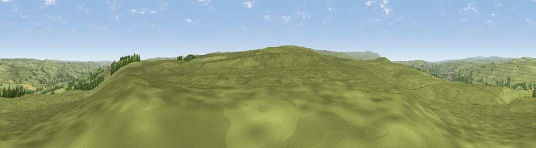

Viewpoint near Melkridge
#14775 in England · top 39% of its area beats it · near MelkridgeThe view, rendered

A 360° render of this exact spot computed from the terrain model, tree cover and land cover — summer colours, afternoon light, calibrated against photographs of famous viewpoints. Real trees, hedges and buildings will differ in detail.
The panorama
Grey silhouette: terrain skyline in each direction (720 bearings, Earth curvature and refraction included). Dashed green: skyline with trees (+15 m) and buildings (+8 m) as obstacles. Blue strip: how far the ground is visible on each bearing.
Where the view opens
Wedge length = distance to the farthest visible ground on that bearing (vegetation-aware). Rings at 10, 25 and 50 km.
What fills the view
94% grassland · 4% woodland ·
Angular shares of the visible panorama (visual magnitude), not map area. Landscape diversity 0.11 (0–1 Shannon).
Key numbers
More beautiful places nearby
The staircase of upgrades: each row has a higher view potential than everything closer. Driving times are estimates from straight-line distance, calibrated against real road routing — check an actual route before setting out.
| Place | Direction | Drive | Score |
|---|---|---|---|
| Viewpoint near Melkridge | WSW · 2 km | ~5 min | 61.1 |
| Viewpoint c11151_7470 | SSW · 4 km | ~9 min | 68.4 |
| Viewpoint near Melkridge | NNW · 6 km | ~13 min | 69.0 |
| Viewpoint near Melkridge | N · 6 km | ~13 min | 70.6 |
| Viewpoint near Bardon Mill | NNE · 10 km | ~19 min | 71.0 |
| Viewpoint near Halton Lea Gate | WSW · 12 km | ~22 min | 72.0 |
| Viewpoint near Hallbankgate | WSW · 15 km | ~27 min | 73.4 |
| Viewpoint near Slaggyford | WSW · 15 km | ~27 min | 73.7 |
54.94684, -2.39377 · source: screening · position refined by local search. Computed location — check access rights before visiting.